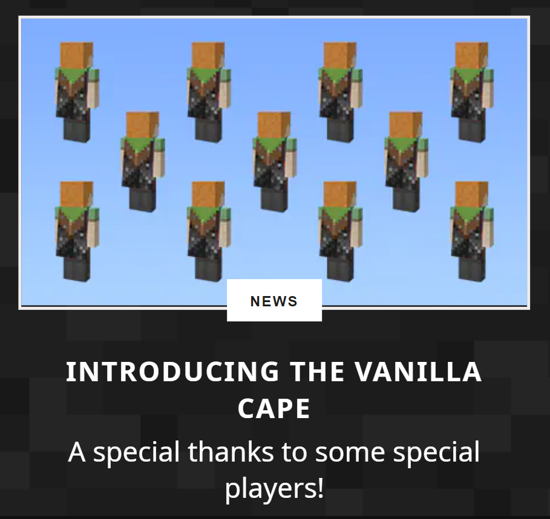

New Vanilla Cape for Minecraft in 2022
Sheumais | 13 August 2022
A new cape has just been announced by Mojang.
A blog post featuring the Vanilla cape was posted to the Minecraft.net website on the 13th of August, 2022.
This official blog post comes just three days after the leak of the Valentine cape.
The new cape features a grass block overlayed at the top with a bedrock pattern underneath.
blog post announcement
The cape is described by Mojang as, "A special Vanilla cape for Java and Bedrock players," suggesting we will be seeing new capes on player's backs very soon.